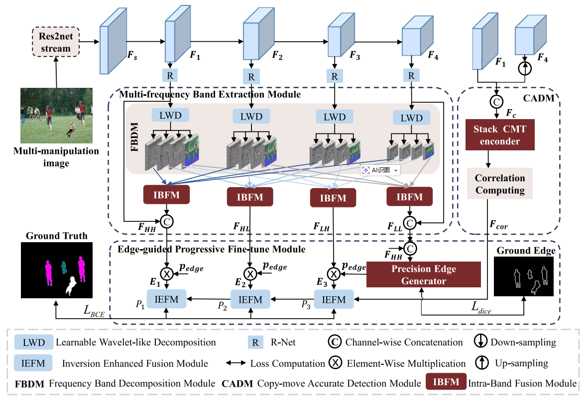

ALL-IN-ONE:Divide-and-Conquer Strategy for Multi-Manipulation Image Classification and Localization

ALL-IN-ONE: Divide-and-Conquer Strategy for Multi-Manipulation Image Classification and Localization
Ye Zhu , Chang Ti, Gang Yan , Yingchun Guo , and Bin Li , Senior Member, IEEE
摘要
在广告和媒体行业中，图像编辑通常需要运用多种技术手段来满足创意与技术要求。在法律纠纷或媒体完整性评估等场景中，检测篡改区域至关重要。然而现有取证方法往往仅针对单一篡改类型，或将所有篡改视为同一类处理，且多数深度学习方法在频率与边缘提取方面缺乏灵活性，限制了其有效性。为解决这些问题，本文提出了一种用于全面图像取证分析的“一站式”框架，该框架采用分而治之策略实现多篡改图像的分类与定位。具体而言，我们引入多频带提取模块（MBEM，Multi-Frequency Band Extraction Module）以在频域捕捉更丰富的伪影信息，并辅以基于注意力窗口的融合模块，该模块通过跨尺度融合同频特征，更有效地增强判别特征。为提升复制-移动篡改的定位精度，我们设计了复制-移动精准检测模块（CADM，Copy-Move Accurate Detection Module），该模块利用源区域与目标区域间的视觉一致性。此外，我们提出精密边缘生成器（PEG，Precise Edge Generator）作为边缘引导渐进微调模块（EPFM，Edge-Guided Progressive Fine-Tune Module）的组成部分，该模块能生成更精确的边缘以优化边缘定位。为解决标注数据不足的问题，我们构建了一个公开可用的数据集——多篡改图像数据集（MMID，Multi-Manipulation Image Dataset），该数据集包含2000张多操作图像，每张图像至少包含两种伪造类型。我们通过大量实验，将本方法与 MMID 上的最先进方法以及 CASIA 、CoMoFoD和NIST等单操作数据集上的方法进行对比。实验结果表明， MMID 在训练判别模型方面效果显著，并验证了我们提出的方法在同步伪造定位与操作分类的准确性和鲁棒性方面，明显优于现有方法。

图2. 所提出的用于图像多操作分类与定位的ALL-IN-ONE系统架构示意图，该系统由多频带提取模块、复制-移动精确检测模块及边缘引导渐进微调模块组成。输出结果为预测掩模R H×W×4，用于定位操作区域。原始区域、拼接区域、去除/修复区域及复制-移动区域分别以黑色、白色、绿色和粉色标注。
多频带提取模块（MBEM）
- 可学习小波分解（LWD）：为充分挖掘图像频率域信息以捕捉多种操作伪造痕迹，采用可学习小波分解将空间特征分解为多尺度频率分量。其公式为(Fi)HH=HL=LH=LL = WHH=HL=LH=LL × Fi（i ∈ {1,2,3,4}），其中WHH=HL=LH=LL是对应四个频段的可学习权重，能有效分解出不同频率信息。
- 注意力窗口融合模块（AWFM）：为逐步融合不同尺度的同频特征并保留频段信息，设计了该模块。先通过残差块（ResB）处理，ResB((Fi)HH) = ReLU(BN(3×3((Fi)HH)))，再利用联合注意力机制（JA）获取注意力图(Ai)HH = ResB(JA((Fi)HH))，接着使用基于窗口的线性模型优化目标函数，通过平均窗口系数、矩阵化和上采样得到聚合系数，最终通过(Fi-1)HH = σh ⊙ (Fi-1)HH + βh获取高分辨率融合特征，实现了频率域特征的有效融合。
复制-移动精确检测模块（CADM）
- 堆叠CMT编码器：为解决传统Transformer网络固定 patch 大小问题，采用具有不同3×3卷积步长（Stride = {24,12,6,3}）的堆叠CMT编码器获取不同尺度空间特征。通过深度卷积增强局部信息，将空间丰富信息F1与语义丰富信息F4连接得到空间特征Fc，并沿通道维度分为四等份Fic（i ∈ {1,2,3,4}），增强了特征的多尺度表达。
- 自相关计算与百分位池化：为利用复制-移动操作源区与目标区的视觉一致性，采用自相关计算获取像素间皮尔逊相关系数，通过百分位池化层对特征排序并选择 top k 个最相似特征，公式为Fcor = Topk(PP(SC(Fg)))，其中Topk(·)表示取最相似特征，SC(·)为自相关计算，PP(·)为百分位池化层，有效提升了复制-移动区域定位准确性。
边缘引导渐进微调模块（EPFM）
- 精确边缘生成器（PEG）：为生成更准确边缘以提升边缘定位，采用二阶龙格-库塔（RK2）作为求解器。先将F0t沿通道维度分割得到原始信息F，F+1 = F + RK21(F)增强边缘信息，F+1 = F - RK22(F+1)去除冗余信息，最后将F+1与F+1沿通道维度连接并通过1×1卷积得到pedge，相比残差结构（一阶欧拉离散近似）建模更准确，减少了边缘误检。
- 反转增强融合模块（IEFM）：为更好整合频率域、边缘和相关信息并关注难区分区域，该模块包含特征增强（FE）和反转挖掘（IM）分支。FE通过Mi = ψFiE(Cat(Pi+1, Ei))整合特征，IM通过Ni = ψIiM(1 - Sigmoid(Pi+1), 1 - Sigmoid(Ei))反转相关特征和边缘引导频率域信息，最后通过Pi = Pi+1 + Mi + Ni得到渐进预测掩码，提升了难检测区域的定位效果。
损失函数
- 二元交叉熵损失（LBCE）：用于监督预测掩码，公式为LBCE = -∑∑∑(Gxr,y = c)logPr(Pxi,y = c)，其中Gxr,y和Pxi,y分别为像素真实值和预测值，c ∈ {0,1,2,3}代表不同标签，Pr(Pxi,y)为预测概率，有效监督分类结果。
- Dice损失（Ldice）：为处理边缘像素样本不平衡问题，公式为Ldice = 1 - [2∑∑(Gxe,y·Pxed,yge)] / [∑∑(Gxe,y)² + ∑∑(Pxed,yge)²]，其中Pxed,yge和Gxe,y为边缘预测值和真实值。总损失Ltotal = ∑LBCE(Pi, Gr) + λLdice(Pedge, Ge)，λ设为3，综合优化分类和边缘定位性能。
数据集构建
- 多操作图像数据集（MMID）：为解决多操作标记数据不足问题，构建包含2000张多操作图像的公开数据集，每张图像至少含拼接、复制-移动、移除中的两种操作。原始图像来自COCO，通过Photoshop手动篡改，提供像素级多类别标签作为真值，支持多操作图像的学习和基准测试。
- 单操作图像数据集（SMID）：为评估模型有效性，包含来自CASIA、CoMoFoD、NIST 16的1196张拼接图像、208张移除图像和1465张复制-移动图像，用于模型在单操作场景下的性能验证。
实验设计
- 数据集设置：模型在包含50012张单篡改区域图像的合成数据集上预训练，然后在MMID和SMID上微调与测试。合成数据集包括10000张自动生成的拼接图像、20304张来自BusterNet的复制-移动图像和19708张来自DEFACTO的移除图像。
- 实现细节：使用PyTorch框架，Res2Net-50提取空间特征（预训练于ImageNet），图像统一 resize 为256×256，在单NVIDIA RTX 3060 GPU上训练，批大小16，Adam优化器，初始学习率1e-5，采用幂次为0.9的poly策略调整学习率。
- 评估指标：分类性能用IoUC、MIoUC、ACCC，定位性能用PrecisionL、RecallL、F1L、AUCL。IoUC = ∑Pii / (∑Pj=0Pi j + ∑Pi=0Pi j - ∑Pii)，ACCC = (1/k)∑i0Pii0Pi j（K=3），PrecisionL = TP/(TP+FP)，RecallL = TP/(TP+FN)，F1L = 2×PrecisionL×RecallL/(PrecisionL+RecallL)，AUCL为ROC曲线下面积。
结果与分析
- 消融实验结果：在预训练数据集和MMID上，各模块均有效提升性能。Baseline+MBEM相比Baseline，预训练数据集上MIoUC和F1L分别提升9.62%和6.18%，MMID上分别提升3.75%和1.46%；Baseline+MBEM+CADM在MMID上复制-移动的IoUC提升近2.16%，MIoUC和F1L分别提升1.53%和2.01%；Baseline+MBEM+CADM+EPFM在MMID上MIoUC和F1L分别提升1.69%和1.12%，且PEG比TA-Net的OIM模块MIoUC提升1.4%。
- 与现有方法比较：在MMID上，ALL-IN-ONE相比SPAN的F1L和AUCL分别提升25.75%和15.43%，超过MVSS-Net 21.97%/F1L和13.46%/AUCL，优于TA-Net 12.92%/F1L和8.3%/AUCL；在SMID上，相比SPAN提升17.51%/F1L和13.05%/AUCL，超过MVSS-Net 13.28%/F1L和7.82%/AUCL，较TA-Net保持1.18%/F1L和1.81%/AUCL优势，验证了框架的有效性。
- 鲁棒性评估：在MMID上经缩放、高斯模糊、高斯噪声、JPEG压缩等失真处理后，ALL-IN-ONE在调整大小和JPEG压缩下受影响较小，性能优于SPAN、MVSS-Net和TA-Net，对高斯噪声较敏感，但整体鲁棒性突出。
总体结论
- 关键发现：提出的ALL-IN-ONE框架通过分治策略，结合多频带提取、复制-移动精确检测和边缘引导渐进微调模块，有效解决了多操作图像分类与定位问题。构建的MMID数据集为该领域研究提供了支持，实验表明该方法在MMID和SMID上均显著优于现有方法，在准确性和鲁棒性方面表现突出。
- 研究意义：该研究填补了多操作图像同时分类与定位的空白，为广告、媒体等领域的图像完整性评估和法律纠纷中的篡改检测提供了有效技术手段，推动了图像取证技术的发展，同时为后续复杂场景下的混合伪造检测奠定了基础。